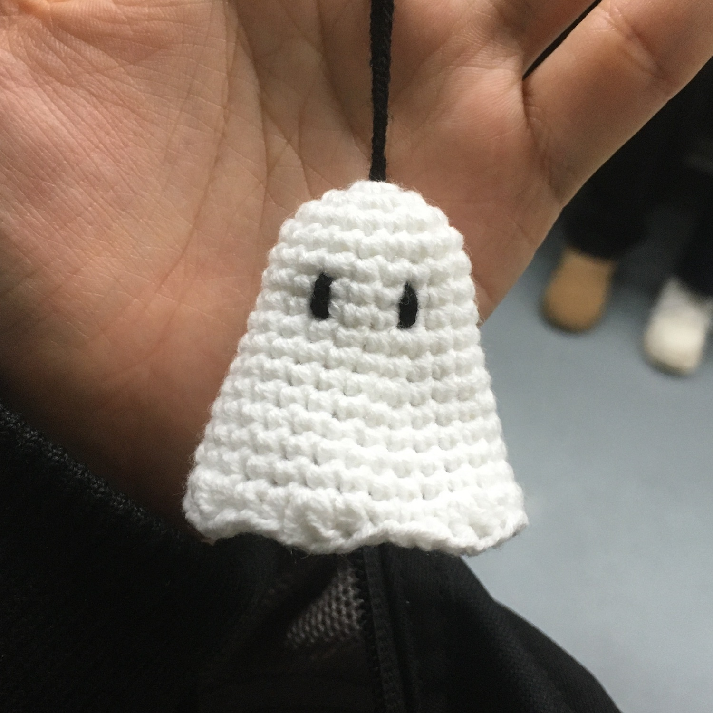
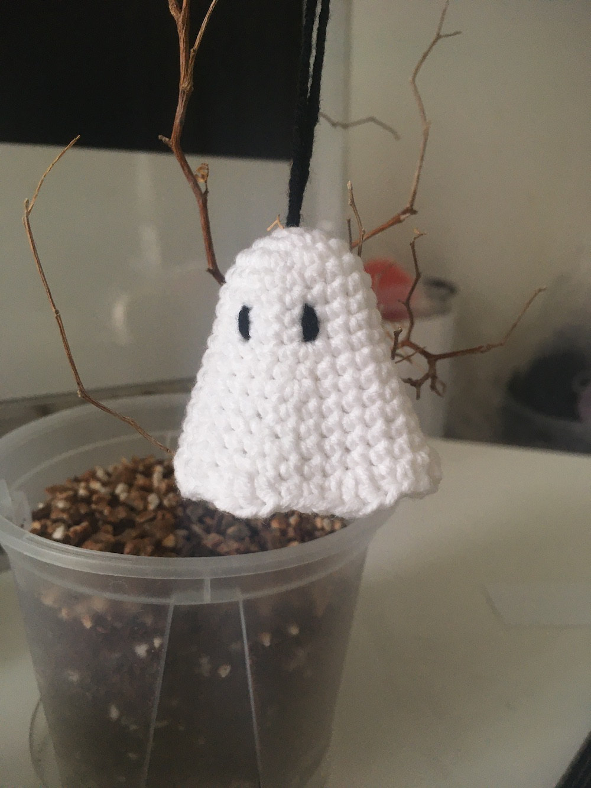

〈나는 죽어버렸다!〉라는 일본드라마를 최근에 후딱 다 봐버렸다. 가벼운 게 딱 좋아! 그렇다고 가벼운 이야기는 아니고 형식이 좀 가볍게 느껴졌다. 짧아서 좋았다는 뜻.
한 맺힌 상태로 죽은 사람들이 내세를 못가고 구천을 떠돌게 되는데, 그런 사람들이 어쩌다가 모여서 서로 한을 풀게 도와주고 내세행 열차를 탈 수 있게 도와주는 이야기였다.
연출이 특이했는데 음악이 특이하면서 특히 좋았다.
다 보고 나니 좀 인상적으로 남은 건 두 번째 에피소드의 인물이 가진 이슈 ‘사랑이란 뭔지’에 대한 이야기가 은근하게 마지막까지 이어진 것이다.
이 드라마와 관련된 뭔가를 만들 수 있을까 고민하다가 500엔 동전을 만들까 생각했는데, 갑자기 동전지갑을 떠야겠다 생각이 들어서 찾다 보니 유령 동전지갑 도안이 있어서 이걸로 결정했다. 그런데 또 마음이 바뀌어서 좀더 단순한 유령 도안을 뜨기로 결심했다..
-
유령도 오래 전부터 떠야지 생각해뒀던 것 중 하나다. 왜냐하면 좋아하는 영화 중에 〈고스트 스토리〉가 있기 때문이다. 엄청 환장하게 좋아한다거나 그런 건 또 아니긴 한데, 이 영화를 봤던 때에 〈노 매드 랜드〉를 같이 봤는데 진절머리나게 외로운 영화를 어쩌다 연이어 봤구나 하는 그런 감상이 남았었다. 영화가 참으로 사무치게 외롭군.. 그런 생각을 했던 것 같다.
영화에 대한 감상은 뭐라고 할 말이 딱히 없는데, 내가 좀 좋아하는 류의 영화다. 시간에 대한 영화다? 그러면 일단 좀 좋아하는 편이다. 그리고 조용하다? 그러면 또 일단 좋아하는 편이다. 그래서 일단 뭐 뻔하게도 좋아하게 된 영화인 것 같기도 하고. 그런데 이 영화가 마음에 들어서 같은 감독의 또 다른 유명작을 찾아봤는데 진짜 너무 심각하게 재미없어서 보다가 말았다. 이동진선생님께서 별점 5개를 준 영화이던가 뭐 그랬던 거 같은데~
〈고스트 스토리〉의 유령은 좀 축 쳐져 있어야 하는데 대체로 유령 도안들은 은근 귀여운 편이라 마음에 드는 게 잘 없었다. 이쯤 되면 그냥 타협하고 귀여운 유령을 떠야 한다.
-
귀신에 대해 뭔가 생각을 가지고 있어야 하는 게 맞나, 갑자기 그런 의문이 든다. 왜냐하면 굿을 치니까..? 근데 굿이 귀신과 관련이 있는 게 맞나? 내 뇌피셜인가? 싶어서 검색해봤는데 이런 글이 나왔다.
http://theologia.kr/board_chungeein/22263
음..바빠서(거짓말) 글이 안읽힌다(진실). 풍물굿은 하늘과 땅과 인간을 연결 짓는 행위인데.. 귀신과 직접적인 연관이 있다고 할 수 있을지 모르겠다. 귀신도 갑자기 자세한 뜻이 궁금해서 찾아보니 “죽은 사람의 넋, 사람에게 화(禍)와 복(福)을 내려 준다는 신령(神靈) 혹은 초인간적 또는 초자연적 능력의 발휘 주체로 여겨지는 신(神)”이라고 한다. 그러니까 귀신은, 같은 신神자를 갖고 있긴 한데 우리가 신이라고 믿는 신앙적인 존재라기 보다는 귀이하고 신앙의 대상이 되지 못하는 혼에 가까운 존재로 말하는 것 같다.
여기까지 찾고 읽고 하다 보니, 지금까지 내가 주로 해온 것은 잘 알지도 못하면서 해왔지만, 하여간에 천지신명을 향한 행위였던 것 같다. 어디를 향하고 있는지도 몰랐던 나를 반성한다..
그리고 또 이렇게 생각하고 반성하고 나니, 천지신명 보다는 귀신을 향하고 싶다는 생각이 강하게 든다.
나는 무신론자는 아니다. 나는 신이 있으면 있는대로, 믿는 사람들은 믿는대로, 말하자면 나랑은 그냥 상관없다고 생각하는 편이다. 신이 있건 말건 나는 솔직히 (페미니스트의 반댓말로 쓰는 거 아니고) 휴머니스트다. 예전부터 그렇게 생각해왔다. 천국이고 지옥이고, 내세고 극락이고, 윤회고 나발이고(엄마 미안) 하여간에 그냥 이 육신…현생…이것으로 전부라는 생각을 갖고 있는 듯하다.. 내 생각인데 확신이 없다..
사놓고 안읽은 [귀신들의 땅]이라는 책을 좀 읽어야 겠다는 생각이 든다.. 업보가 많다. 업보라는 말도 갑자기 자세한 뜻을 알고 싶어서 나무위키를 찾아봤다. 윤회고 나발이고 라고 말했는데, 윤회랑 같이 종교에서 핵심적인 개념이란다.
https://namu.wiki/w/%EC%97%85%EB%B3%B4
이런 말이 적혀 있다.
“모든 지각 있는 존재, 불교식 용어로 '유정(有情)'들은 이처럼 태어나는 그 순간부터 행위와 결과와 원인의 연쇄에 묶인다는 것이다. 심지어 '태어남' 자체 또한 결과를 부르는 한 가지 '행위'로 볼 수 있다. 게다가 인도철학의 관점에서는 한 개체가 죽더라도 그대로 소멸하지 않고 윤회하므로, 살면서 지은 업으로 인한 업보는 죽음 이후까지도 영향을 미친다.”
유령이 되어 구천을 떠도는 것이 좋은지, 성불을 빌어주어 저승으로 가는 것이 좋은지, 갑자기 그런 생각까지 하게 된다. 그러니까 구천을 떠도는 유령이 정말로 곁에 있다면 우리 곁에 존재하기를 바라는지, 성불하기를 바라는지, 유령들에게는 어느 편이 좋은지. 이기적인 인간은 어디까지 멋대로 상상해볼 수 있는지.
일하기 싫어서 별 생각을 또 다 한다..